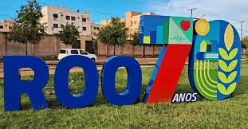
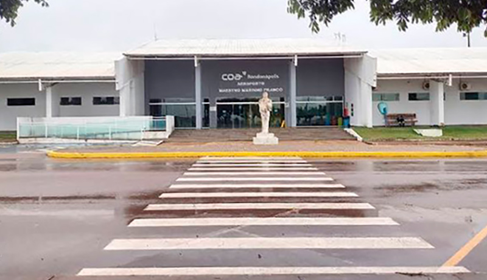
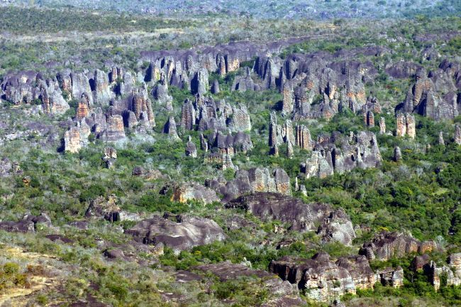

Rondonópolis é um município brasileiro do estado de Mato Grosso, localizado na região Sudeste do estado, a 210 km da capital Cuiabá. É a cidade mais populosa do interior do estado com 244 897 habitantes segundo o censo demográfico em 2022.
Rondonópolis tem o segundo maior produto interno bruto (PIB) do estado de Mato Grosso. Está localizada estrategicamente no entroncamento das Rodovias BR-163 e BR-364 e é a ligação entre as regiões norte e sul do país. Por estas vias são transportadas toda a produção agrícola e industrial para os grandes centros metropolitanos e portos do Brasil.
 Representa um importante polo que atende 21 municípios e cerca de 560 mil habitantes. Investe em qualificação profissional, infraestrutura, tecnologia e desenvolvimento humano, como incentivo para o crescimento da produção agropecuária, da indústria, do comércio e do turismo, gerando emprego, renda e qualidade de vida a todos que aqui vivem e investem.
